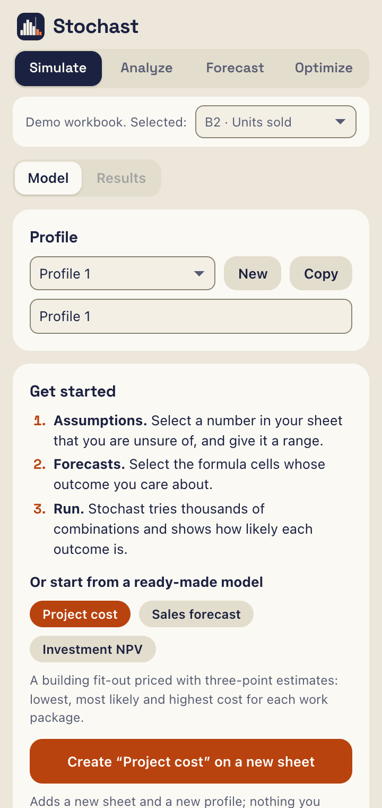
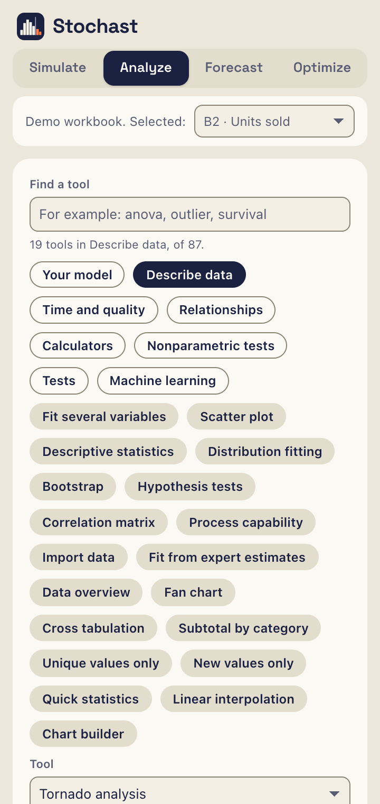

Stochast
StochastFour modules, one pane
Mark the uncertain inputs in a spreadsheet you already have, and Stochast tells you how likely each outcome is, what drives it, and which choice holds up best.
Simulate
Give uncertain cells a distribution, run thousands of trials, and read the chance of hitting a target, the drivers and the full forecast chart.
Analyze
Tornado and scenario analysis, distribution fitting, bootstrap, hypothesis tests, ANOVA, reliability and machine learning on any range.
Forecast
Time-series methods, ARIMA, regression and econometrics, trend curves, stochastic processes and volatility models.
Optimize
Choose decision cells, limits and a goal, then search for the best values, optionally simulating every candidate.
See it
The pane sits beside your workbook, in light or dark mode.


Install
- Download the installer and quit Excel.
- Open the file. If macOS says it cannot check it, open System Settings › Privacy & Security and choose Open Anyway.
- Follow the installer; it asks once for your password to trust a certificate used only by Stochast.
- Open Excel and choose Home › Stochast.
Private by design
Stochast brings its own copy of everything it needs, so it works with no internet connection. The pane is
blocked from contacting any host other than your own Mac, and its certificate can only vouch for
localhost. Read the privacy notice.
To remove Stochast, open Uninstall-Stochast.pkg. Your workbooks are not touched.